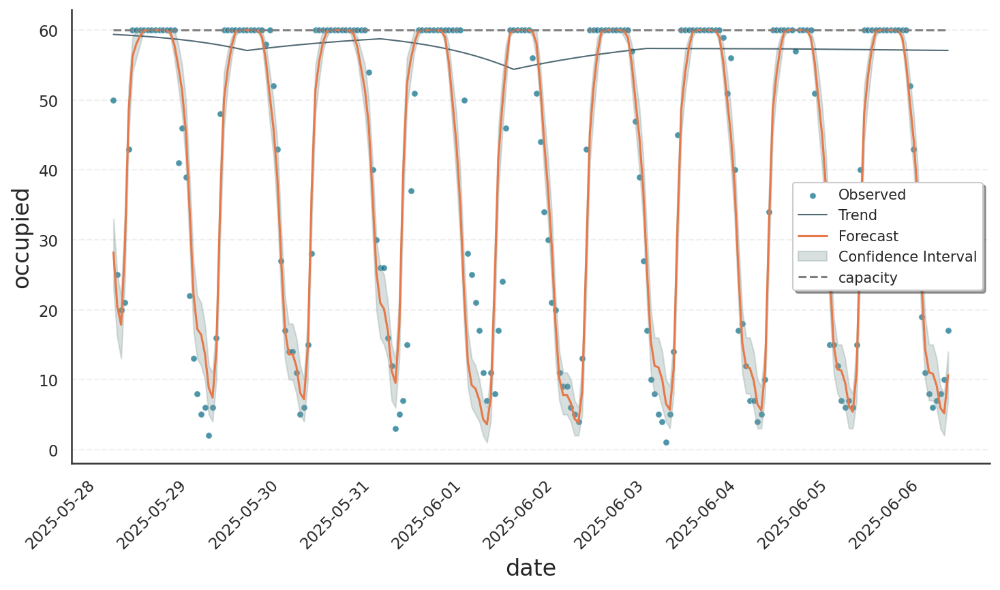

Saturation#
Most distribution models offered by Gloria enforce lower or upper bounds on the response variable. While the lower bound is often simply zero, the upper bound - also known as capacity - can have arbitrary values that may even change over time. In this section, we explore how Gloria handles saturation, that is, a situation in which a time-series is close to its capacity and thus becomes highly non-linear.
Data Set#
We use a semi-real seat-occupancy data set available here. The columns date and count stem from the Automatic Hourly Pedestrian Count data set, offered by the city of Sydney [1]. Additionally, there are two more simulated columns:
seatsis the total number of seats available for pedestrians.occupiedrecords how many of those seats are taken.
Our goal is to model the number of occupied seats. It scales with the number of pedestrians - the more crowded it is, the more people tend to sit. However, the number of seats is limited. In other words, seats is the capacity of our system.
Constant Capacity#
We first restrict the data set to the initial nine days. In this range, the total number of seats is fixed at 60. As we are handling count data with an upper bound, we use the binomial model.
import pandas as pd
from gloria import Gloria, cast_series_to_kind
# Load the data
url = "https://raw.githubusercontent.com/e-dyn/gloria/main/scripts/data/real/seat_occupancy.csv"
data = pd.read_csv(url).head(220)
# Save the column names for later usage
timestamp_name = "date"
metric_name = "occupied"
# Convert to datetime
data[timestamp_name] = pd.to_datetime(data[timestamp_name])
# Convert data type to unsigned int
data[metric_name] = cast_series_to_kind(data[metric_name], "u")
# Set up the Gloria model
m = Gloria(
model="binomial",
metric_name=metric_name,
timestamp_name=timestamp_name,
sampling_period="1 h",
n_changepoints = 5
)
# Add observed seasonalities
m.add_seasonality("daily", "1d", 5)
# Fit the model to the data
m.fit(data, capacity=60)
# Predict
data_predict = data.loc[:,[timestamp_name]]
prediction = m.predict(data_predict)
# Plot
m.plot(prediction, include_legend=True, show_capacity=True)
Both binomial and beta-binomial models require the capacity as user input. Accordingly, we pass the known value by capacity=60 into the highlighted fit step.
Note
The fit() API additionally allows to pass constant capacities using capacity_mode / capacity_value pairs. For instance, capacity_mode="constant" and capacity_value=60 is equivalent to capacity=60, but the modes "factor" and "scale" are available as well. These are useful when the capacity is not exactly known [2].
The result of the binomial fit can be seen below. During pedestrian rush hours, virtually all seats are taken, meaning the data reach their capacity, which is shown as a dashed gray line in the plot. The fitted model saturates in this range, as can be seen by the oscillations being capped at 60. Note that not even the confidence interval violates the limit set by capacity.
{kind=link}
Varying Capacity#
Sydney surely cares for its residents and makes an effort to provide more space for sitting. Accordingly, after the initial nine days, the number of seats significantly increases. The binomial model using a vectorized capacity is the perfect fit for this situation. While we previously had to specify a constant capacity, the capacity can now vary with each data point in the time series. Accordingly, the input data must contain a capacity column. When setting up the model, we specify this column using the parameter capacity_name. Note that both data frames passed to fit() and predict() must include this column. Also note that the capacity is not anymore passed as argument to fit(), as it is now fully specified by the input data:
import pandas as pd
from gloria import Gloria, cast_series_to_kind
# Load the data
url = "https://raw.githubusercontent.com/e-dyn/gloria/main/scripts/data/real/seat_occupancy.csv"
data = pd.read_csv(url)
# Save the column names for later usage
timestamp_name = "date"
metric_name = "occupied"
capacity_name = "seats"
# Convert to datetime
data[timestamp_name] = pd.to_datetime(data[timestamp_name])
# Convert data type to unsigned int
data[metric_name] = cast_series_to_kind(data[metric_name], "u")
data[capacity_name] = cast_series_to_kind(data[capacity_name], "u")
# Set up the Gloria model
m = Gloria(
model="binomial",
metric_name=metric_name,
timestamp_name=timestamp_name,
capacity_name=capacity_name,
sampling_period="1 h",
n_changepoints = 5
)
# Add observed seasonalities
m.add_seasonality("daily", "1d", 5)
# Fit the model to the data
m.fit(data)
# Predict
data_predict = data.loc[:,[timestamp_name, capacity_name]]
prediction = m.predict(data_predict)
# Plot
m.plot(prediction, show_capacity=True, include_legend=True)
The grey dashed line in the plot shows that the number of seats increased from 60 to 160 within just a few days. At around 100 seats, saturation occurs less frequently and above 150 seats, the number of seated people remains well below capacity. The fitted model successfully captures both the dampened oscillations in the saturated regime and the unrestrained fluctuations when capacity is not reached.

Summary#
In this tutorial, we saw how Gloria’s bounded-count models behave when a time series approaches its capacity. In such cases, the models automatically dampen further growth: seasonal components are clipped to the ceiling, trend changepoints flatten, and predictive intervals are truncated so they never exceed the specified upper limit. Whether the capacity is fixed or time-varying, Gloria incorporates the bound directly into the likelihood, allowing it to represent the transition from linear growth to a plateau without manual tuning. As a result, forecasts remain realistic even in heavily saturated regimes, while still tracking ordinary fluctuations when the system operates below capacity.
Footnotes
mode |
description |
value-range |
|---|---|---|
|
The provided |
|
|
The capacity is the maximum of the response variable times |
|
|
The capacity is optimized such that the response variable is distributed around the expectation value \(N \times p\) with \(N=\) capacity and \(p=\) |
|